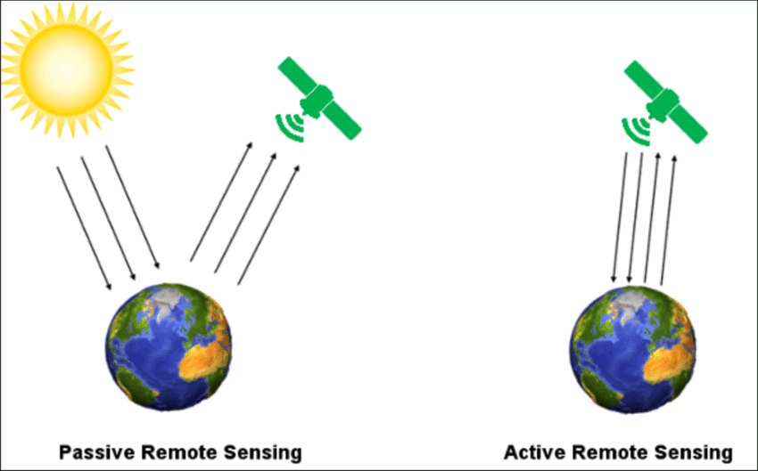

1 Week1 Getting started with remote sensing
1.1 Summary
1.1.1 what is remote sensing?
Remote sensing is the process of detecting and monitoring the physical characteristics of an area by measuring its reflected and emitted radiation at a distance (typically from satellite or aircraft). It has two types, one is active remote sensing,the other one is passive remote sensing. The difference between them is active remote sensing has a energy source.
1.1.2 Electromagentic waves
propagate through space and carry momentum and electromagnetic radiant energy.
1.1.3 Interactions with atmosphere and earth’s surface
| Atmosphere | Earth’s suface | |
|---|---|---|
| Interaction | scattered by particles |
|
Scattering has three types:
a) Raleigh and Mie
b) non-selective
Raleigh scattering(Why sky is blue? and sunset is red?)
Blue light is scattered more than red light so the sky appears blue. The light has to travel further through the Earth’s atmosphere in sunset. The blue light is scattered away, but the red light isn’t scattered very much – so the sky appears red.
1.1.4 Four resolutions of remote sensing data
| Resolution Types | Description | Examples |
|---|---|---|
| spatial resolution | the size of the raster grid per pixel | 20cm or 30m |
| spectral resolution | the number of bands | Band 2 - blue (0.45-0.51 wavelength) |
| temporal resolution | the time it revisits | daily or every 7 days |
| Radiometric resolution | the range of possible values | 8 bit, 12 bit, or 16 bit |
1.1.5 Raster data acquisition
There are many sources that provide raster data, for example, raster data can be produced by aerial photography and satellites. The common satellites data can be downloaded in two websites:
Sentinel data
The data is provided by the Copernicus Space Component Data Access (CSCDA), which is operating by the European Space Agency. The data has high level information, free, full, and open for all international users.
Data download link: https://scihub.copernicus.eu/dhus/#/home
Landsat data All Landsat data are provided by the U.S. Geological Survey, and it’s also free. It has the longest free temporal data, which is useful for doing raster data analysis in temporal aspects.
Data download link: https://earthexplorer.usgs.gov/
1.1.6 Analysis tool
SNAP (Sentinels Application Platform) is a raster data analysis tool, and it is designed for Sentinels data. It also can manipulate Landsat data, so it has strong analysis functions. For example, resampling data, reporjecting, masking, and so on.
1.2 Application
Color composites are an essential concept in remote sensing. True color composites sometimes refer to the color we recognize in life. For example, the tree canopy is green, and the strawberry is red. The false color composites are to display the real color in other colors. For example, the tree canopy can be displayed as red, and the strawberry can be displayed as green. The false color composites are widely applied in many remote sensing researches.
One research was conducted in Afghanistan by U.S. Agency for International Development and the U.S. Trade and Development Agency, and it assessed the natural resources of Afghanistan. The following picture is a true color composite. It’s difficult to recognize some of the characteristics in this area., but the False color composite better displays individual strata, allows regional correlations of strata, and better depicts structure, such as anticlines, synclines, and faults(Philip A. (2007)).

The color gun can produce a variety of false color composites. And the second research compares the different combinations of false colors in Pail/Padhrar Area in Punjab Province, Pakistan (Bajwa, Ahsan, and Ahmad (2020)) The table shows the same geological formation can be displayed in various colors in different false color composites. This would be applied to many remote sensing data if we try to identify some specific features.
1.3 Reflection
Raster data acquisition
The two main raster data acquisition ways are useful for future research, and I can find all raster data all over the world from Sentinel and Landsat. This actually inspires me that I can applied raster data in my final work of GEOG0114 course last term. My original topic is to explore how the thermal inequality affect people’s health in Chicago, but I don’t know where to download raster data and how to manipulate it. Then, I just gave up this topic and selected a new topic, which was doing criminology research. However, I think I’m currently able to analysis raster data in my study by using SNAP, QGIS, and R.
Spectral signature
I think this content will be useful for me to better understand the applications of remote sensing data. Spectral signature is the variations of reflectance and absorption for different materials in various wavelengths.
The above figure provides a very good example for explanation. I can easily identify different material based on their characteristics of reflectance. For example, when the wavelengths greater than 700nm, the reflectance of green vegetation increases from 10% to 50%, this is also called red edge. This is really essential for identify green vegetation in real application and distinguish different vegetation type because the amount of Chlorophyll are various in different species. In addition, I also can use spectral signature to identify different type of materials, like explore where is the urban area, agriculture, bare land, and so on.
Color composites
This concept is very interesting because I think many people have cognition that tree leaves are green, and flower is colorful. Also, in our phone, they are also displayed as the same color that we recognize in life. If they are displayed into different colors, it comes very interesting things. For example, I can use false color composites to create image has purple or pink leaves if I want. In addition, false composites are essential for remote sensing data because they can show more characteristics in the image compared to true color composites. This has been discussed in the application part, and I think I also can apply false color composites in my future study.